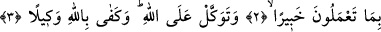
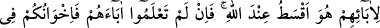
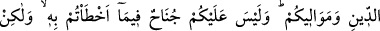
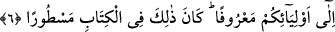

ALLAH GERÇEĞİ SÖYLER
Bismillâhirrahmânirrahîm
1. Ey Peygamber! Allah’tan kork, kâfirlere ve münafıklara boyun eğme. Elbette
Allah her şeyi bilmekte ve yerli yerince yapmaktadır.
2. Rabbinden sana vahyedilene uy. Şüphesiz Allah, bütün yaptıklarınızdan
haberdardır.
3. Allâh’a güven. Vekîl olarak Allah yeter.
4. Allah, bir adamın içinde iki kalb yaratmadığı gibi, «zıhâr» yaptığınız eşlerinizi
de analarınız yerinde tutmadı ve evlâtlıklarınızı da öz oğullarınız olarak tanımadı.
Bunlar sizin ağızlarınıza geliveren sözlerden ibarettir. Allah ise gerçeği söyler ve
doğru yola O eriştirir.
5. Onları (evlât edindiklerinizi) babalarına nisbet ederek çağırın. Allah yanında
en doğrusu budur. Eğer babalarının kim olduğunu bilmiyorsanız, bu takdirde onları
din kardeşleriniz ve görüp gözettiğiniz kimseler olarak kabul edin. Yanılarak
yaptıklarınızda size vebal yok; fakat kalplerinizin bile bile yöneldiğinde günah